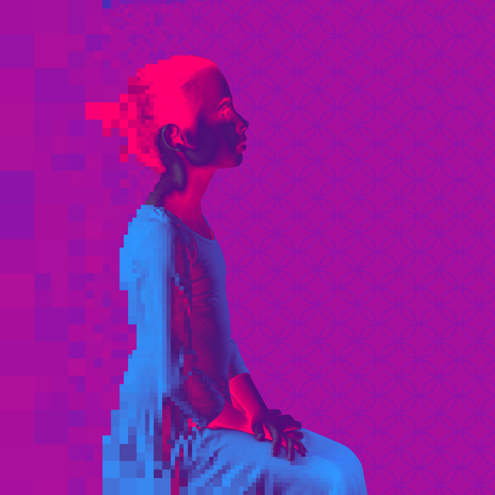
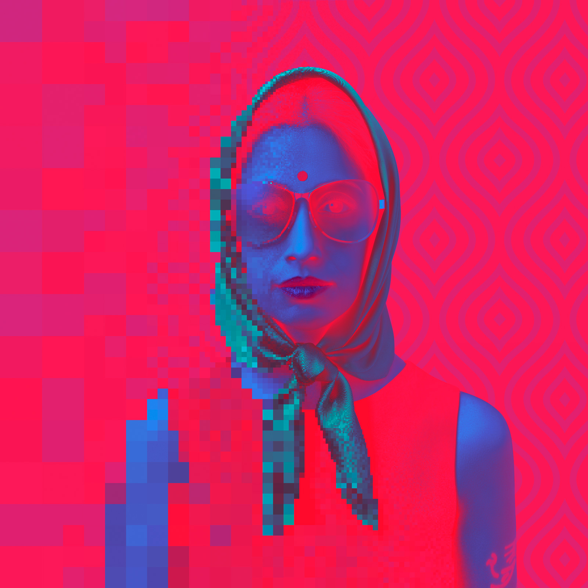
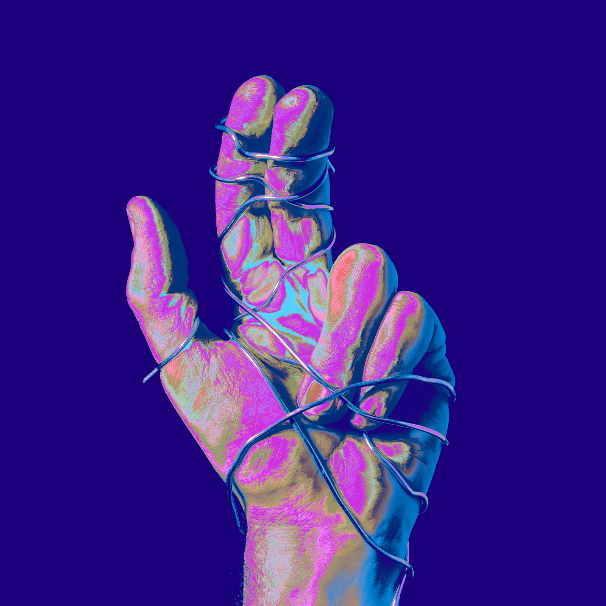
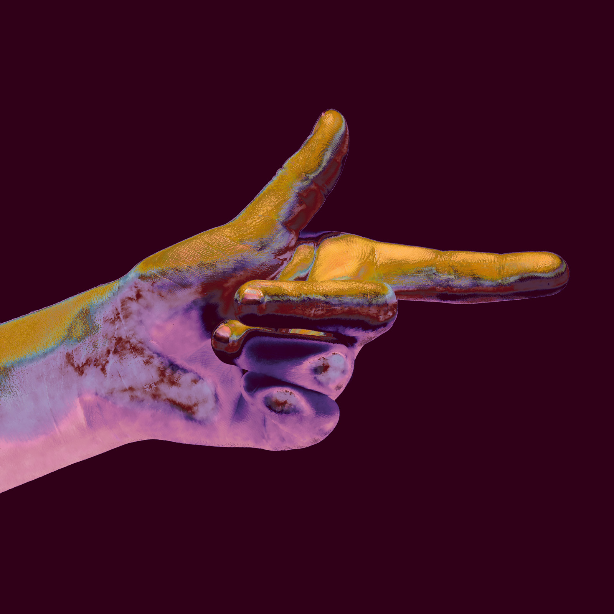
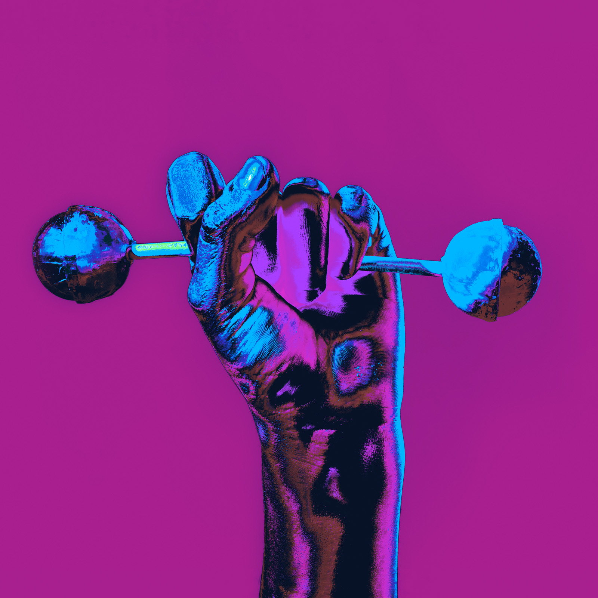
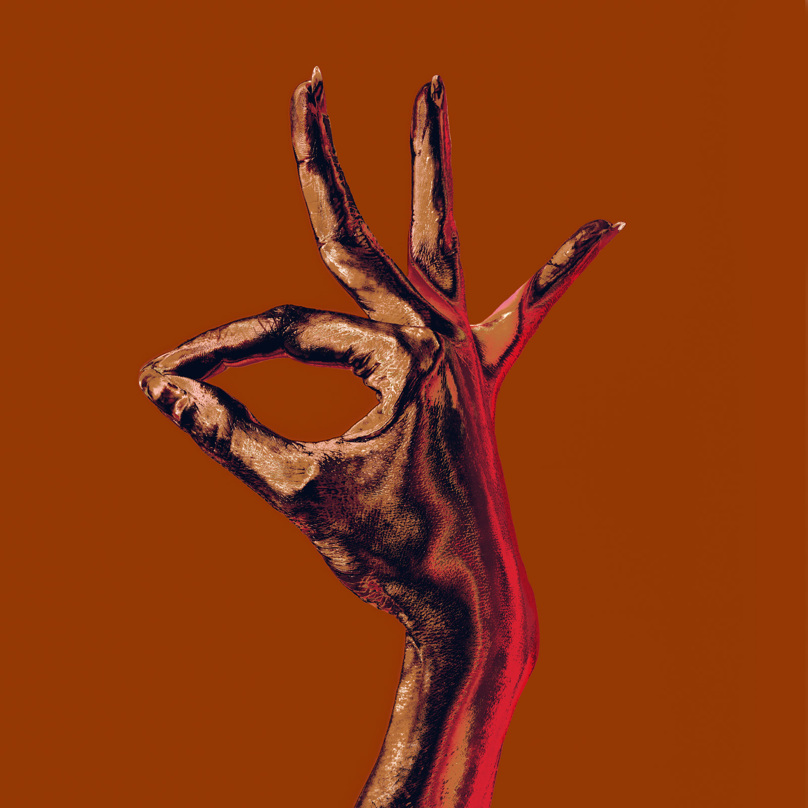
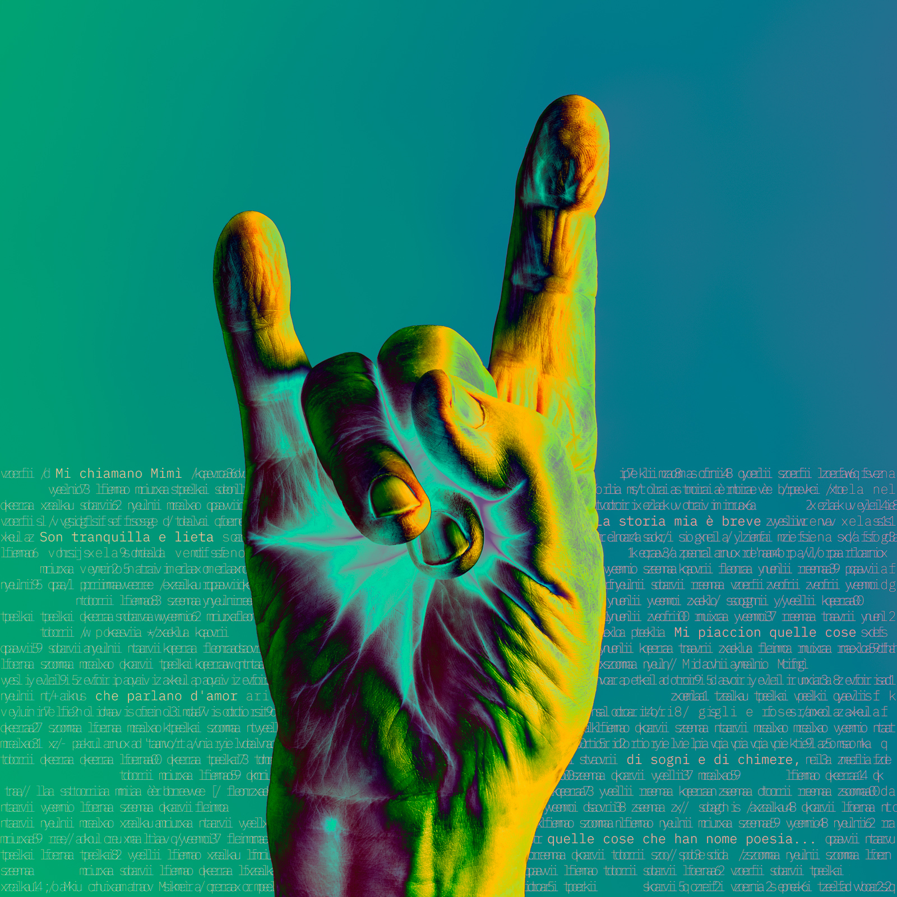
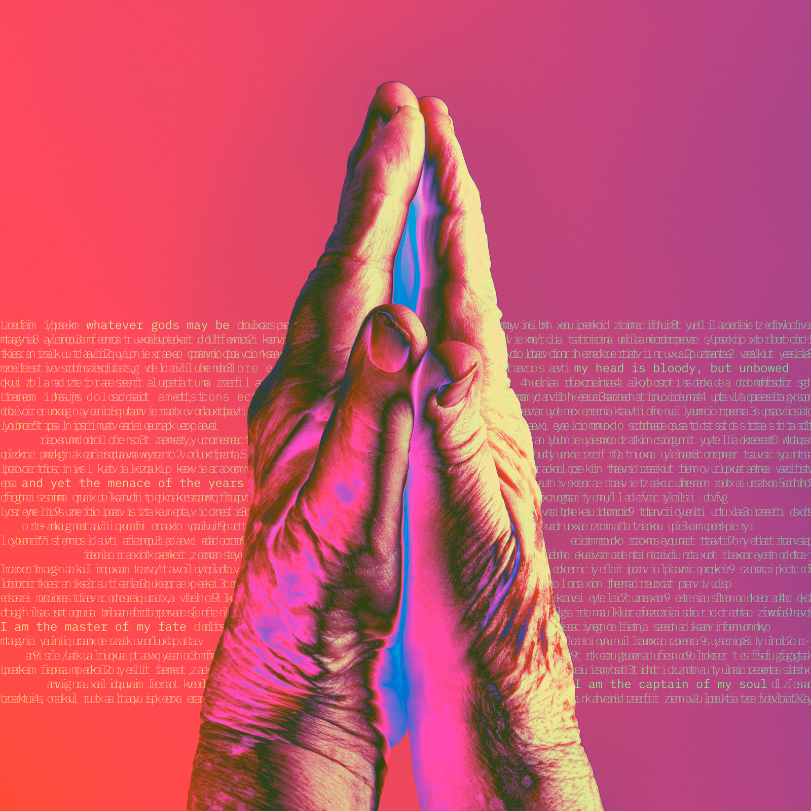

Colour is shifting all around me.
Pixel after Pixel.
Roberto Sabatini
London

Compassed
Bepixel
2025 Giclée print on Hahnemühle Photo Rag 80 × 80 cm Edition of 15 + 2 AP
Bepixel
Bepixel looks at the space between how a person appears, how they are read, and what remains undefined.
Beginning with photography, each portrait is transformed through colour distortion and progressive pixelation, shifting between presence, representation and abstraction.

Isness
Bepixel
2025 Giclée print on Hahnemühle Photo Rag 80 × 80 cm Edition of 15 + 2 AP
The colour came from a mistake.
While building printer profiles, a wrong setting transformed a test image into something I had not intended. The colour was wrong, and it was beautiful.
These four hands were the first works to emerge from that accident. What followed was years of learning to control something that had begun by chance.
Hue Soul – 2024
-

Chromatic Devotion -

Vivid Innocence -

Sweet Strength -

Soulful Ballet

Lucia
Signs
2026 Giclée print on Hahnemühle Photo Rag 80 × 80 cm Edition of 15 + 2 AP
Written on the print: fragments of Mimì’s aria from La Bohème.
Signs
The hand as a language. Gesture, words, and the meanings we give them.

Invictus
Signs
2026 Giclée print on Hahnemühle Photo Rag 80 × 80 cm Edition of 15 + 2 AP
Written on the print: fragments of Invictus, by William Ernest Henley, 1875.
About Me.
I trained as an illustrator in Rome. Since then I have worked as a graphic designer, an art director, a video editor, a photographer and a retoucher, in Italy, Spain and London.
Each of those was a way of testing what an image can do. Paint, print, camera, screen. Moving between them has shaped how I work, and my interest in colour and how an image is read.
I have spent more than three decades making pictures for other people, and making work of my own alongside them. That work often begins where control becomes uncertain: a mistake, a distortion, a result I did not intend, which I can then take and make my own.
I live and work in London.
Contact: getintouch@sabatiniartstudio.com – Instagram @rob.artista